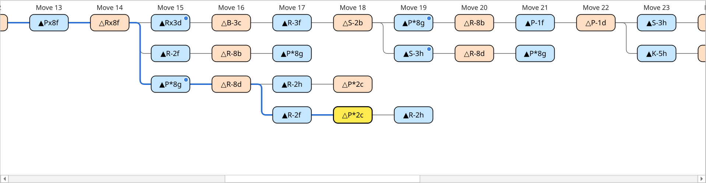
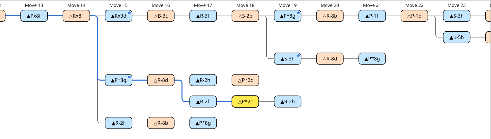
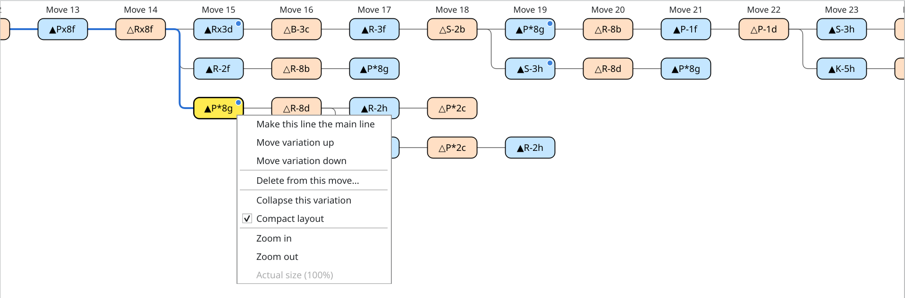
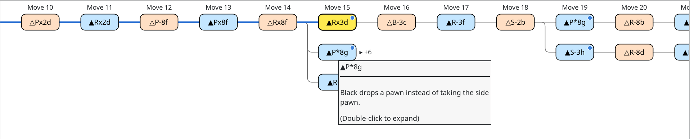
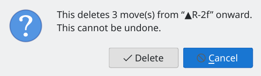
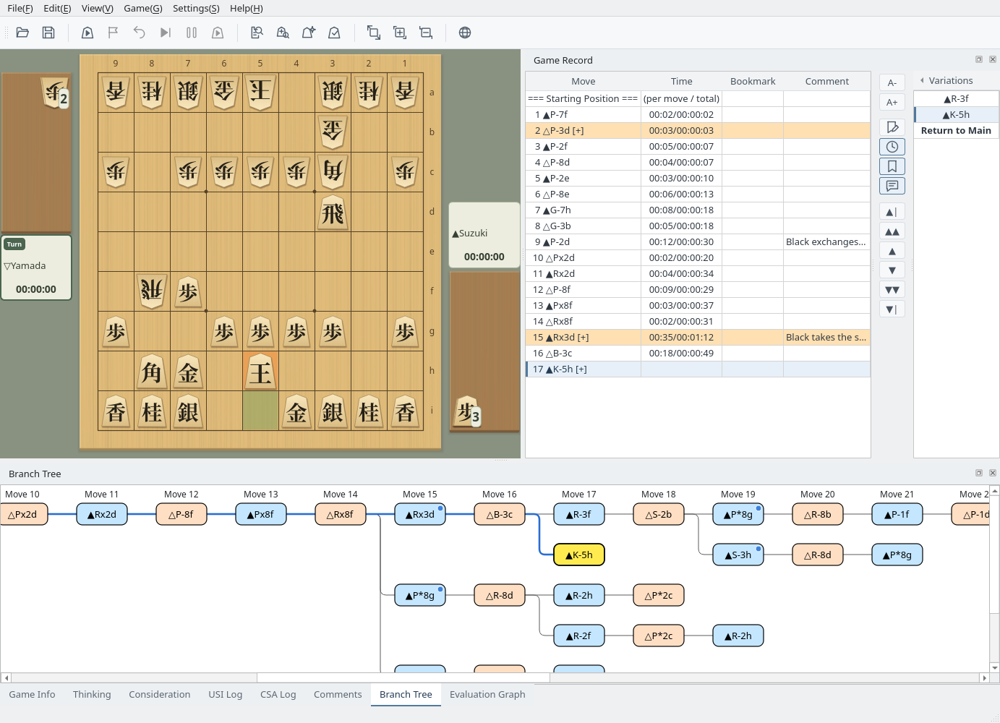

Branch Tree
See the main line and every variation at a glance, and organize them from the right-click menu
Screenshots were captured on Linux with the English interface.
Reading the Branch Tree
The main line and the variations are lined up by move number
Choose the Branch Tree tab at the bottom of the window. Starting from Starting Position on the left, the main line runs along the top row and the variations appear below it, lined up by move number. Moves are added as soon as they are played in a game as well as when a record is loaded. You can rearrange the panel as described in Dock Panels. For the game record and the Variations list, see Game Record Display.
- Blue boxes are Black's moves and orange boxes are White's moves.
- The yellow move is the one shown on the board, the same move as in the game record and the Comments tab.
- The path from the starting position to the yellow move is drawn as a thick blue line.
- Variations that start from the same move are joined by a vertical line.
- Moves with a comment have a blue dot in the top-right corner. Hovering over a move shows the move and the beginning of its comment.
- The “Move n” headers stay at the top when you scroll vertically.
When the yellow move is out of view, the tree scrolls to show it.


Branch tree showing a variation within a variation (move 18): the path from the starting position in blue and blue dots on moves with comments
Each variation is placed on the first free row below the line it branches from. When two variations share a row, a gap of one move is left between them so that they do not look like one line.
Uncheck Compact layout in the right-click menu to give every variation its own row, in variation order. The setting is kept for next time.


Compact layout turned off (the same record as above)
Moving and Changing the View
Move through the positions with clicks and keys, and change the size
Click a move to go to that position. The board, the game record, and the Variations list switch to the same move. After clicking the branch tree, you can also use these keys.
| Key | Action |
|---|---|
| Left / Right | The previous or next move of the same line (Right at the starting position goes to the first move of the main line) |
| Up / Down | The move on the row just above or below at the same move number |
| Home | The starting position |
| End | The last move of the line |
During a game, a game analysis, or position editing, you cannot select or edit moves. View operations such as collapsing and zooming still work.
Change the size between 50% and 200% with Ctrl+wheel (⌘+wheel on macOS), a trackpad pinch, or Zoom in and Zoom out in the right-click menu (the wheel and the menu change it by 10%). Actual size (100%) restores the original size. The size is kept for next time.
Right-clicking the branch tree shows these items, depending on where you click.
| Menu | Shown when | Action |
|---|---|---|
| Make this line the main line / Move variation up / Move variation down / Delete from this move… | You right-click a move other than the starting position (not during a game, a game analysis, or position editing) | Edit the variations (see Edit Variations) |
| Collapse this variation / Expand this variation | You right-click a move of a variation other than the main line (a variation with two or more moves, or with variations branching from it) | Hide or show the rest of the variation (see Collapse Variations) |
| Expand all variations | Some variations are collapsed | Expands all collapsed variations |
| Compact layout | Always | Switches between packing variations into free rows and one row per variation |
| Zoom in / Zoom out / Actual size (100%) | Always | Changes the size |


Right-clicking a move of a variation (▲P*8g at move 15)
Collapse Variations
Hide long variations to keep the lines you want to see easy to follow
Right-click a move of a variation and choose Collapse this variation to keep only the first move of the variation and hide the rest of the line and the variations that branch from it. The first move gets a dashed border, and the number of hidden moves appears to its right as “▸ +n”. Hovering over it shows “(Double-click to expand)”.
To show it again, double-click the first move, or right-click it and choose Expand this variation. When some variations are collapsed, Expand all variations in the right-click menu expands them all at once.
Going to a hidden move from the game record or the Variations list expands it automatically. When the move shown on the board becomes hidden, the first move of the collapsed variation turns yellow.


The ▲P*8g variation at move 15 collapsed (six moves hidden, including the variation that branches from it)
Edit Variations
Promote a line to the main line, reorder variations, and delete moves from the right-click menu
Right-click a move in the branch tree, or in the Variations list to the right of the game record, for these operations. Operations that do not apply are grayed out. Editing marks the game record as unsaved, so save it when needed.
| Menu | Action |
|---|---|
| Make this line the main line | Makes the line from the starting position to that move the main line. After that move, the line that follows it (the top variation) becomes the rest of the main line. Not available for main-line moves. |
| Move variation up / Move variation down | Moves the variation that contains the move one place up or down among the variations that start from the same move. The top variation is the main-line side at that branch point. The order in the Variations list and in the saved file changes too. |
| Delete from this move… | Deletes the move, the rest of its line, and the variations that branch from it. Check the number of moves and click Delete (this cannot be undone). If the move shown on the board is deleted, the position goes back to the move just before the deleted one. |


Delete confirmation showing the number of moves
Add Variations by Moving Pieces
Moves played on the board when no game is in progress are recorded in the game record
When no game, game analysis, consideration, or position editing is in progress, moving a piece on the board records the move as the next move after the one shown.
- If there is no next move yet, the move continues that line.
- If the same move already exists, it simply goes to that move.
- Otherwise, the move becomes a new variation and appears in the Variations list and the branch tree.
You are asked whether to promote. When a game-ending move such as a resignation is shown, the move is played from the position just before it. Even when the record is empty, for example right after startup, recording starts from the position shown. Recording a new move marks the game record as unsaved.


▲K-5h played at move 16: it becomes a new variation at move 17 and appears in the Variations list and the branch tree
The Play button in the Joseki window records moves the same way. Added moves are saved like any other variation. For the formats that keep variations, see Game Record Management.